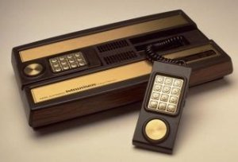

Intellivision
In 1979, the intellivision controller was created by Mattel electronics led by Dave James. The intellivison controller is made up of two small parts with a number pad and D-pad on it. These hand helded controllers then connect to a larger console using wires.
The number pad was used for complex movements and action, while the D-pad could be pressed 16 different directions. Although the shape of the controllers were a little awkward in hand, the intellivison was defiantly a step up from the Atari Joystick. New pathways for games and controllers opened once the intellivision was made public, such as games that involved cars like the famous Bump 'n' Jump.
Between 1980 to 1983, approximately 3 million intellivision controllers were sold at the price of $165 each.

Created in 1982.